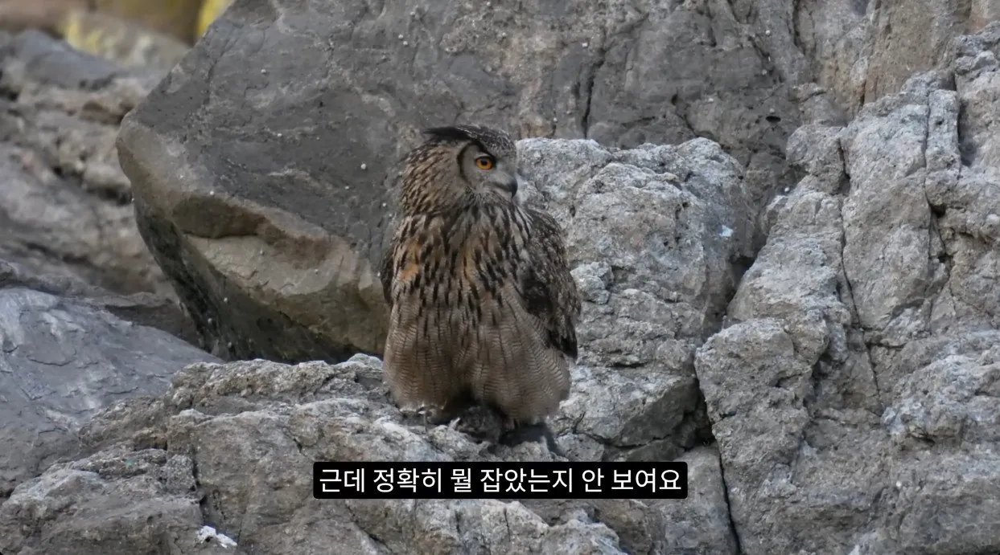
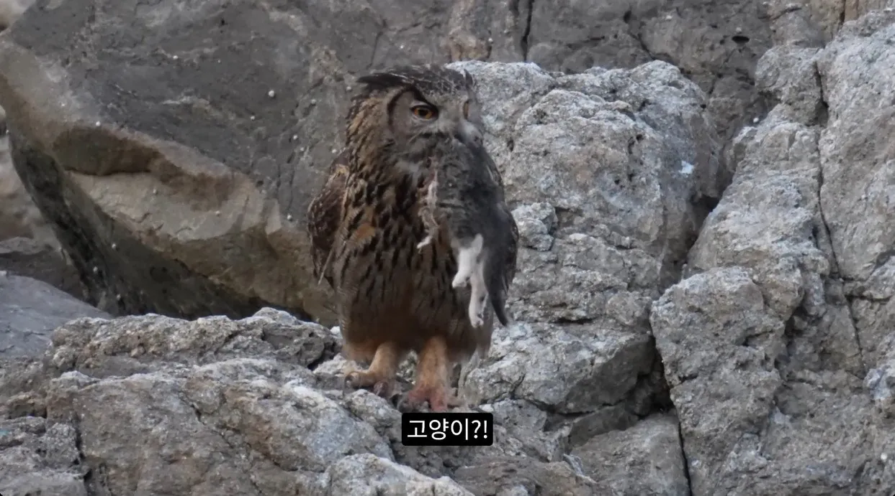
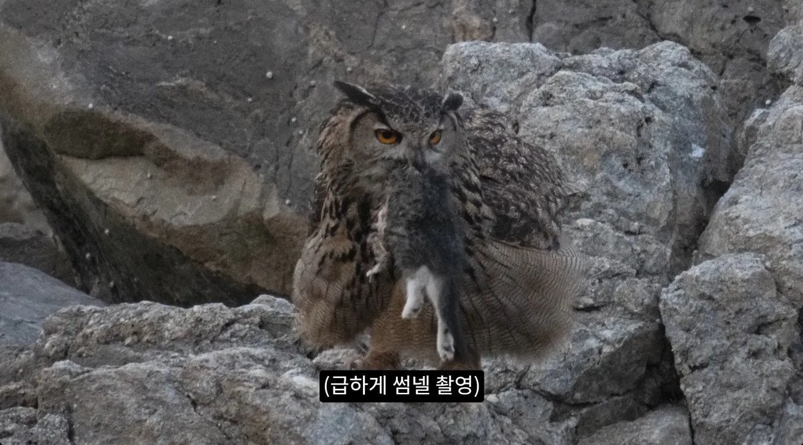
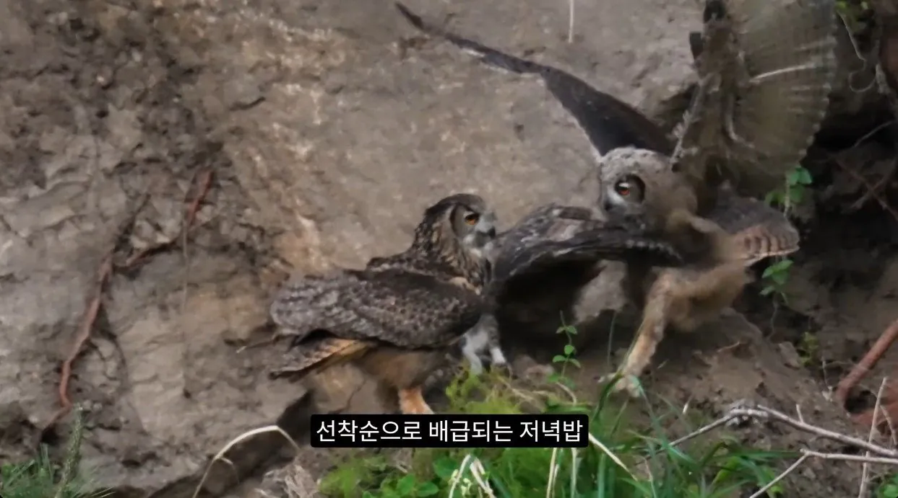
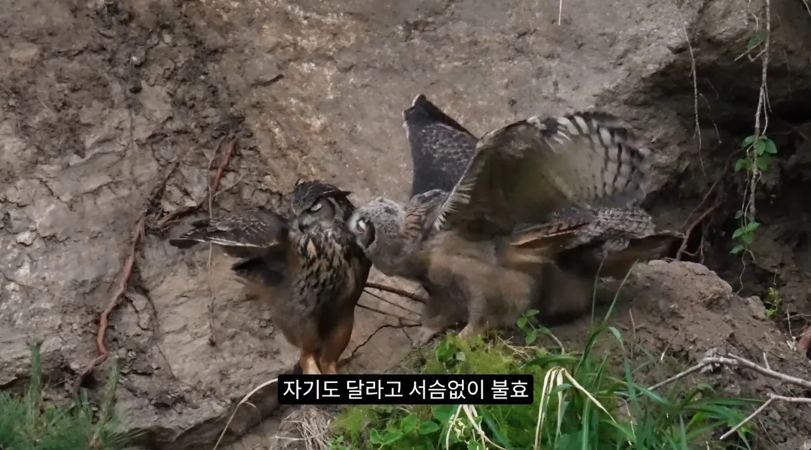
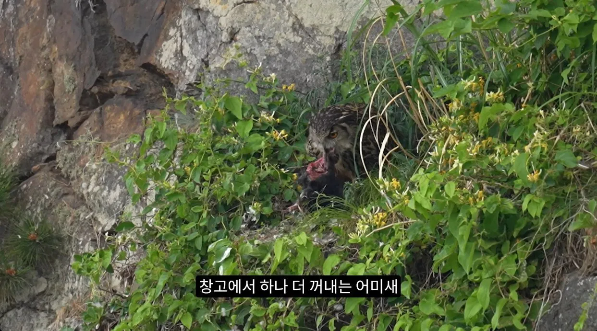
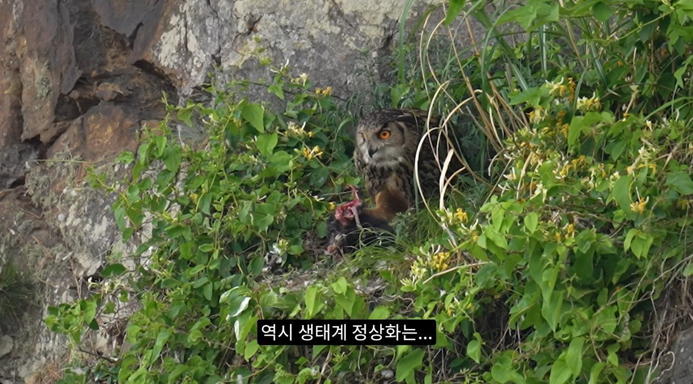
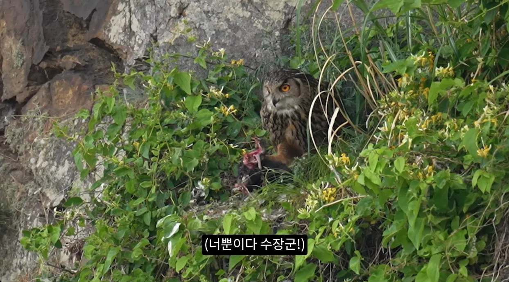

들고양이
출처 : 유튜브 새덕후 (바로가기)








들고양이
출처 : 유튜브 새덕후 (바로가기)
댓글
수집 당시 댓글 31개
꾸이꾸꾸이 · 4 일 전
고양이만 특혜가 심하지. 팬덤이 워낙 극성인 점도 한몫 하고. 고양이 관련된 법안 잘못 건들면 난리나..
놀고먹고싶다아 · 4 일 전
유해조수가 아닌거지 보호종인건 아니지
태일아너무아파아구아구 · 4 일 전
주관적인요정 · 4 일 전
수리부엉이야 많이많이 먹고 자라렴
어뜨무러차 · 4 일 전
지금도 TNR 사업 의미없고 태어나는 애들 감당 못해서 작게는 먹이주기 금지, 크게는 안락사 고려까지 해야된다고 말 나오는 중인데 계속 TNR 외치는 애들은 더 많은 고양이가 태어나서 나중에 더 감당안될 때까지 기다렸다 더 많이 잡아 죽이자는 사이코패스로밖에 안보임
목이 짧아 슬픈 · 3 일 전
먹이주기를 막아야됨 그게 제일 문제임 정말
각설 · 4 일 전
발톱 박으면 꼼짝 못해~
고독한사냥꾼 · 3 일 전
자박수리
레위나 · 4 일 전
캣맘 앞에서 잡아가면 좋아서 자지러진다고합디다
개드립관리자 · 4 일 전
고양이는 맛없어서 안먹는거라던데 쟤네한테는 맛있나?
글렌모렌지시그넷 · 4 일 전
완벽하네 사체도 가져가고 지들끼리 먹고 천연기념물 수리부엉이 개체수 확대에도 도움되고
YEEZY · 4 일 전
킹 엉 이
레벨한우도살자 · 4 일 전
몇년전에 대부도 캠핑갔다가 바닷가에서 수리부엉이 사체봤는데 진짜 존나큼 날개 안펴도 크더라
고죠사토루 · 4 일 전
캣맘들 긁힐만한 자막이 보이네 ㅋㅋ
콩냉이순장고 · 4 일 전
부엉맨 · 3 일 전
믿고있었다규 ㅜ
싸브레 · 3 일 전
털바퀴 살처분이 답이다
Aquamarine · 3 일 전
대 부 엉
곧휴가철이다 · 3 일 전
비둘기 + 고양이 너무 많음
난코박고죽음을택하겠다 · 3 일 전
식당 근처 비둘기 이 미친련들은 사람이 바로앞에가도 태평하게 걸어다님 가다가 발로차면 차질거같음
뉴비곰 · 3 일 전
운전할때 가끔 미친 비둘기들이 차도에서 걸어다니는데 ㅅㅂ 빵빵거려도 안도망가고 차가 굴러가도 날라갈 생각을 안함 그냥 가면 밟아죽일것같아서 신경쓰임 ㅋㅋㅋ
CFIZCT2G · 3 일 전
비둘기는 먹이주기 금지 법안 시행한다던데 고양이도 똑같이 가야
텅빈우유팩 · 3 일 전
수장군님 ㅠㅠㅠㅠ
야간투시경 · 3 일 전
Taming · 3 일 전
고양이도 그저 고기네 실제로 사냥하는거 보니까 존나 쉽게 하네
morry · 3 일 전
고양이 맛들인 새끼들이 커서 또 왕창 잡겠네 자연이 다 해주는구나 인간새끼들 벌려놓고 아무것도 못하는 사이에
이럴럴로럴 · 3 일 전
좀 된 영상이긴한대 아직도 고양이 잡아먹고있을 수리부엉이에게 개추
정상화의신 · 3 일 전
'다크나이트'
신성 · 3 일 전
캣맘이 삵 담비 혐오하잖어
전략적과소비 · 3 일 전
역시 큰일은 맹금류형님이 하는구나
WE3 · 1 일 전
좋아요